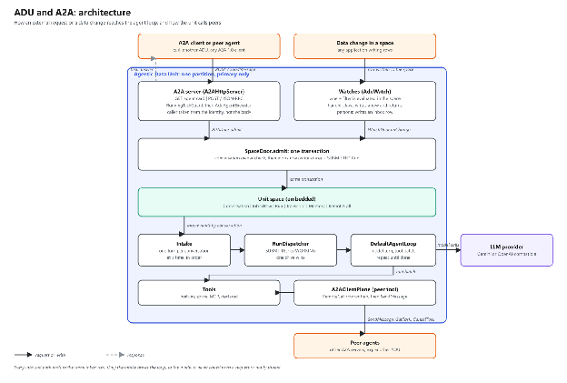

ADU might require a different license in newer versions.
Reference examples: gs-home/examples/ADU
An Agentic Data Unit (ADU) is an autonomous agent attached to a Processing Unit (PU). An ADU goes beyond standard deterministic business logic by enabling complex agentic flows.

An Agentic Data Unit (ADU) is designed specifically for intelligent, autonomous computing. Instead of treating AI agents as external consumers that pull massive datasets over the wire to make decisions, an ADU embeds autonomous reasoning capabilities directly alongside real-time state.
| Term | Definition |
|---|---|
| ADU (Agentic Data Unit) | A deployed Processing Unit hosting an embedded Space, an inbox, event watches, and optional agent runtimes. |
Persona (AduPersona) |
The operational profile of an agent, defining instructions, accessible tools, model configurations, and reasoning round-trip bounds. |
| Externally Offered Persona | The designated persona exposed to external callers through the A2A HTTP server (maximum of one per unit). |
| Conversation | A stateful sequence of messages sharing a common contextId, evaluated sequentially in strict FIFO order. |
| Task / Run | The execution lifecycle resolving a single admitted message. The protocol taskId matches the internal Run row ID. |
| Inbox Row | The admitted work record stored in the local Space, marked DONE after processing and subject to configurable retention. |
| Intake Container | The polling container that pulls pending inbox rows and delivers them to the execution dispatcher. |
| Agent Loop | The runtime turn engine, which alternates between model inferences and batched tool executions until completion. |
| Peer Agent | A remote agent declared via adu.external-agent.<alias>.* and exposed to the model as an executable tool. |
ADUs react in real time via two primary triggers:
Data-Driven Triggers: State mutations, that is, changes inside the in-memory data grid, can automatically wake the ADU.
External Agent Requests: Calls routed over the standard Agent-to-Agent (A2A) protocol allow external multi-agent systems to invoke the unit.
ADU agents can invoke tools sourced dynamically from three layers:
Hardcoded Custom Tools: Low-latency native functions written directly within the platform.
Model Context Protocol (MCP) Integrations: Out-of-the-box connectivity to declared MCP servers.
Exposed Agent Tools: Interfaces published by peer and external registered agents.
An ADU can communicate with external agents, both inbound and outbound.
The AduSpace bean names the reference Space and the types in it that the agent may use. Its main purpose is to limit the Space tools to this Space and these types only. Calls on any other types are refused with DENIED.
In addition, each type definition is added to the prompt, with property names and Java types, so the model knows the fields before its first query.
The reference Space and the listed types must exist before you deploy the ADU that refers to them.
Example:
<bean class="com.gigaspaces.adu.AduSpace">
<property name="gigaSpace" ref="orderSpace"/>
<property name="types"
value="com.gigaspaces.example.adu.core.Order"/>
</bean>
For multiple types, use comma-separated values.
Within an ADU, every data change trigger can be bound to either a deterministic or a non-deterministic execution path:
Deterministic Logic: Traditional deterministic code. No LLM is required, but the code can push a notification to an external agent using the A2A protocol.
Non-Deterministic Logic (Agentic Personas): LLM-powered agents defined by a clear role, prompt instructions, operational boundaries, and a declared set of tools.
AduWatch defines the specific condition that triggers an activity and how that activity should be handled. Under the hood, this works similarly to an event-driven definition (data change triggers).
In a deterministic handler, Java code directly handles the change. The key differentiator from a standard PU is the built-in capability to send data to another agent via the A2A protocol.
<bean id="order-cancelled" class="com.gigaspaces.adu.AduWatch">
<!-- Trigger condition referencing GigaSpace of a remote order Space -->
<property name="gigaSpace" ref="orderSpace"/>
<property name="type" value="com.gigaspaces.example.adu.core.Order"/>
<property name="where" value="status = 'CANCELLED'"/>
<property name="operations" value="update" />
<!-- Deterministic handler: Java code to call when trigger is raised -->
<property name="handler" value="noteTheCancellation"/>
<!-- Dispatch method: 'queued' or 'inline' (inline for fast executions on calling thread) -->
<property name="dispatch" value="inline"/>
</bean>
When an LLM is required, the handler uses a persona to dictate the actions taken when the trigger is raised. Instead of defining the handler property, define the persona property.
<bean id="large-order" class="com.gigaspaces.adu.AduWatch">
<!-- Trigger condition referencing a remote space and condition … -->
<!-- Persona definition describing what to do -->
<property name="persona" value="reviewer"/>
<!-- queued - not using the notify thread but rather a separate thread pool -->
<property name="dispatch" value="queued"/>
</bean>
When adu.a2a.port is specified, the ADU launches an HTTP server exposing the standard Agent2Agent (A2A) protocol.
The AduPersona defined in the ADU handles the requests (see the adu.a2a.persona property).
| Endpoint | Method | Description |
|---|---|---|
/.well-known/agent-card.json |
GET |
Discovery card detailing the externally offered persona, service URL (adu.a2a.url), transport details, and externally exposed skills. Cacheable via ETag and Last-Modified. |
/ |
POST |
The JSON-RPC 2.0 interface processing all A2A control and execution methods. |
All requests to the JSON-RPC interface must declare:
POST / HTTP/1.1
Host: 127.0.0.1:9811
Content-Type: application/json
A2A-Version: 1.0
A2A-Version: 1.0: Mandatory. If omitted, the version defaults to 0.3 and the request is rejected with VERSION_NOT_SUPPORTED.
Content-Type: Must resolve to application/json (unsupported types return HTTP 415).
Inline Limits: Payloads exceeding memory thresholds are rejected with HTTP 413 before parsing.
SendMessage: Dispatches a message into the unit. The connection blocks until execution reaches a terminal state (or returns immediately if configuration.returnImmediately is active).
SendStreamingMessage: Streams lifecycle events over Server-Sent Events (SSE): acceptance confirmation, intermediate artifacts, and terminal state.
GetTask / ListTasks: Reads current or historical run state.
CancelTask: Signals an active task to stop at its next safe execution boundary.
SubscribeToTask: Opens an SSE stream to observe an active task's progress.
curl -s -X POST http://127.0.0.1:9811/ \
-H 'Content-Type: application/json' \
-H 'A2A-Version: 1.0' \
-d '{
"jsonrpc": "2.0",
"id": 1,
"method": "SendMessage",
"params": {
"message": {
"role": "ROLE_USER",
"messageId": "client-msg-001",
"parts": [
{"text": "How many orders are in status NEW? Return only the count."}
]
}
}
}'
messageId: Client-assigned tracking ID. Forms the idempotency key when paired with the caller identity and contextId.
contextId: Identifies an ongoing conversation. Omit it to initialize a conversation; use the unit's returned ID for subsequent messages.
taskId: Identifies a specific execution run. Pass it only when querying status via GetTask. Submitting new messages to an active or completed taskId is rejected.
The admission of an inbound SendMessage follows this sequence:
Method and Version Verification: The process begins with A2AHttpServer.rpcCall, which validates the JSON-RPC method and ensures the protocol version is correct (it must be 1.0).
Active Task Rejection: RunningTaskGuard checks whether the request targets a task ID that is already executing, and rejects it if so. Messages intended for queuing must not specify a taskId.
Caller Principal Resolution: AduAgentExecutor.callerOf determines the identity of the caller using the configured identity provider, based on the request headers.
Persona and Version Selection: A2ADoor.admit routes the request to the active persona and its corresponding instruction version.
Atomic Transaction Execution: SpaceDoor.admitAsk performs a critical single transaction within the embedded Space. It verifies conversation ownership and writes two synchronized records: an InboxRow (keyed by the caller and messageId) and a Run record with the status SUBMITTED.
Request Thread Blocking: The incoming HTTP request thread (AduAgentExecutor.awaitTheRun) blocks, polling the Run state at one-second intervals until the task completes.
Decoupled Intake Processing: Operating independently, the IntakeContainer dequeues the InboxRow strictly in First-In-First-Out (FIFO) order within the conversation.
Run State Transition: RunDispatcher.onMessage changes the Run state from SUBMITTED to WORKING and appends the user's message to the dialogue transcript.
Agent Turn Execution: DefaultAgentLoop.run executes the agent's turn. It iterates between model inferences and batch tool executions, persisting step transitions to the Space until the model signals that it has finished.
Turn Finalization: Upon completion, the Run is marked with a terminal state (COMPLETED, FAILED, or CANCELED), and the InboxRow is marked DONE, which releases the next queued message for that conversation.
Terminal State Observation: The blocked request thread (A2ADoor.awaitTerminal) observes the terminal state of the Run.
Client Response: Finally, the HTTP response returns the execution result and any artifacts to the A2A client.
Request threads write the tracking rows and block until completion. Model inference is driven entirely by the decoupled intake container.
A conversation's inbox record remains locked in a transaction throughout turn execution. Succeeding messages for the same contextId queue behind active tasks.
Hard Wall-Clock Limits: A strict maximum wall-clock ceiling is enforced (Budgets.TURN_HOLD_MS, default 30 minutes). Inferences or tool invocations running past this boundary terminate with MAX_WALL_CLOCK.
ADU agents can invoke remote external agents over A2A by declaring them as peers in the configuration.
Declare peers via properties or Spring XML:
adu.external-agent.passenger-consent.url=http://127.0.0.1:9801/
adu.external-agent.passenger-consent.description=Ask whether a passenger agrees to rebooking. Returns YES, NO, or UNKNOWN.
adu.external-agent.passenger-consent.message-description=The inquiry text containing the target bookingId.
adu.external-agent.passenger-consent.timeout-millis=60000
<bean class="com.gigaspaces.adu.AduRemoteAgent">
<property name="alias" value="passenger-consent"/>
<property name="url" value="http://127.0.0.1:9801/"/>
<property name="description" value="Asks whether a passenger agrees to rebooking."/>
<property name="timeoutMillis" value="60000"/>
</bean>
Peer aliases must contain only alphanumeric characters, dashes (-), and underscores (_). The alias becomes the literal tool name exposed to the LLM.
Each configured peer is presented to the model as a callable tool matching its alias. Additional tools are exposed for individual skills advertised on the peer's agent card.
Audit Logging: Before dispatching the outbound HTTP call, the runtime writes a RemoteCall record to the Space, capturing the conversation ID, run ID, target URL, and outgoing payload.
Task Tracking and Polling: The runtime dispatches SendMessage to the peer, receives the assigned remote taskId, and polls GetTask at 1.5-second intervals until it reaches a terminal state.
Result Ingestion: The peer's response artifact is returned to the model as tool output (capped at 8,192 bytes).
No Automatic Retries: Peer calls are not automatically retried, to avoid duplicate remote mutations. Timeouts resolve to an error indicating that the peer may still be active.
Cancelling an internal ADU run automatically dispatches CancelTask to all pending downstream peer tasks.
Tools can be provided as Model Context Protocol (MCP) servers, external agent tools, or custom-coded tools. Agent tools (including ADU tools) can also be used by other agents when externally offered.
You can supply MCP servers by placing an mcp.json file alongside your pu.xml, and specifying the tools in the persona declaration.
To define a custom tool, configure an AduTool bean where the executing class implements AduToolBody.
A persona encapsulates a specific role, defined by a description, a set of instructions, the specific tools it is allowed to use, maxModelRoundTrips, and maxToolCalls.
ADUs can reference Space proxies and types, and use an embedded Space to store their internal data. Each ADU can define multiple personas, tools, and AduWatch triggers.
| Property Key | Default | Description |
|---|---|---|
isAdu |
None | Mandatory. Enables ADU inbox structures, watch dispatchers, and intake containers. |
--partitions |
1 | Mandatory. ADUs must run as single-partition units. |
adu.a2a.port |
0 (Disabled) | HTTP port exposing the inbound A2A server. |
adu.a2a.url |
http://127.0.0.1:<port>/ |
External service address advertised in the discovery agent card. |
adu.a2a.persona |
First declared | Target persona handling inbound A2A invocations. |
adu.persona.<id>.externally-offered |
false | Designates the persona bound to inbound A2A requests (limit one per unit). |
adu.external-agent.<alias>.url |
None | Target A2A endpoint address of a remote peer agent. |
adu.external-agent.<alias>.description |
Generic | Operational description guiding the model on when and why to invoke this peer. |
adu.external-agent.<alias>.message-description |
what to say to <alias> | Argument documentation provided to the model for the peer's message parameter. |
adu.external-agent.<alias>.timeout-millis |
30000 | Turn execution timeout for remote peer operations. |
adu.AduSpace |
None | Target Space and types the agent is allowed to access. |
adu.watch.<id>.type |
None | Target Space entry class to monitor. |
adu.watch.<id>.where |
None | SQL query expression filtering target Space records. |
adu.watch.<id>.operations |
all | Monitored Space operations: a comma-separated list of write, update, take. |
adu.watch.<id>.handler |
None | Bean name of the deterministic AduChangeHandler implementation. |
adu.watch.<id>.persona |
None | ID of the AduPersona handling matching change events. |
adu.watch.<id>.dispatch |
inline | Handler dispatch strategy: inline (calling thread) or queued (thread pool). |
adu.watch.<id>.batchSize |
1 | Notification batching threshold for high-volume Space updates. |
adu.watch.<id>.fifo |
false | Enforces strict in-order notification processing per watch. |
adu.retention.inbox-days |
7 | Retention window in days for completed (DONE) inbox rows. |
Add the AduBootstrap bean (com.gigaspaces.adu.runtime.AduBootstrap) to start the embedded Space used by the agent.
When deploying the ADU JAR, ensure that the PU property isAdu is set to true.
Define your AduWatch triggers and their corresponding handlers.
Define your AduPersona beans if required for LLM integration.
For each persona, define the tools (custom, MCP, or other agents) it is permitted to use.
If necessary, define a remote agent and allow the persona to use its external tools.
Ensure that the following prerequisites are met:
Maven dependency: Include com.gigaspaces:xap-adu.
The pu.xml must contain the AduBootstrap bean.
The adu.properties file must be created.
Types must be declared in adu.types with entry classes before any watches use them.
At least one watch or persona must be defined.
If you are using an LLM, the API key file must be readable.
The deployment should be unit tested with a smoke provider first.
Deploy using the following command:
gs.sh deploy --partitions=1 -p isAdu=true my-unit.jar
-p isAdu=true is mandatory. If this property is missing, no error is thrown, but the ADU will not start properly.
--partitions=1 is mandatory. Currently, ADUs are limited to deployment with a single partition.
Do not put your API key directly in -p flags. Always supply it securely via a file path.
Metrics: See the ADU section in
Log: Every step of a run is logged at FINE level to a logger specific to the unit: com.gigaspaces.adu.activity.<unit>. To troubleshoot, set it to FINE:
curl -X POST -H 'Content-Type: application/json' http://127.0.0.1:9090/api/v3/pus/CoreAduA/log-level \
-d '{"log": "com.gigaspaces.adu.activity.CoreAduA", "level": "FINE"}'
Traces: A unit exports its traces over OpenTelemetry (OTLP/HTTP) when it is given a collector with adu.otel.endpoint.
For local testing, start a local Jaeger, which accepts OTLP over HTTP on port 4318 and shows traces on port 16686:
docker run -d --name jaeger -p 16686:16686 -p 4318:4318 jaegertracing/all-in-one:1.76.0
See the full examples to learn more: gs-home/examples/ADU